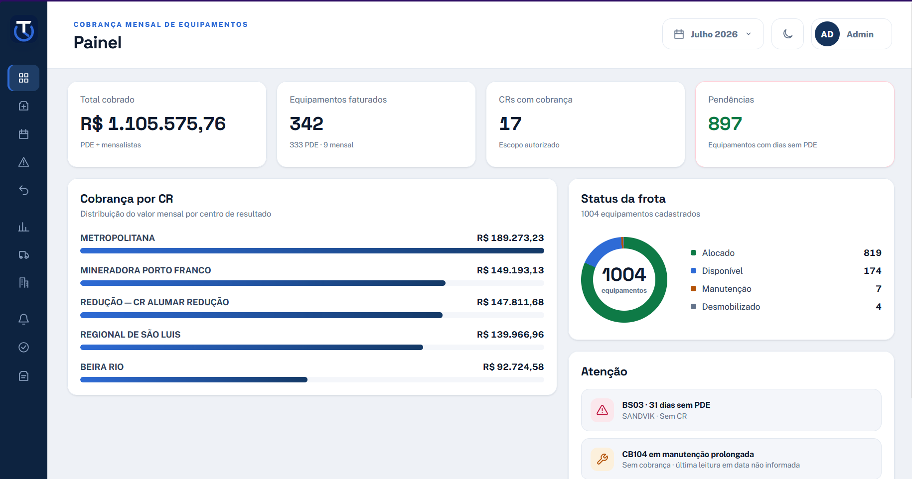
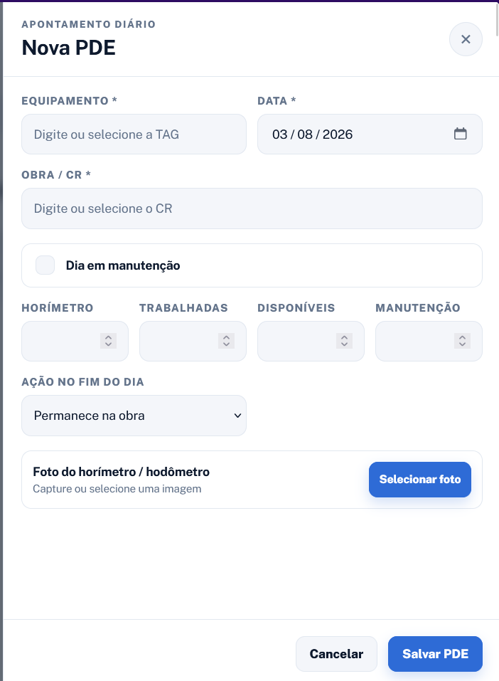
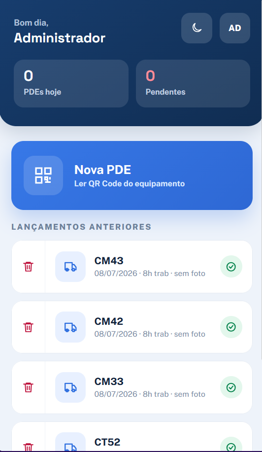
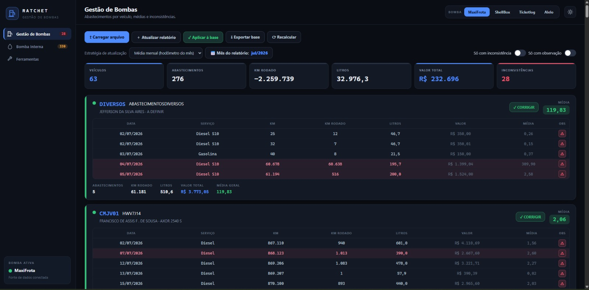
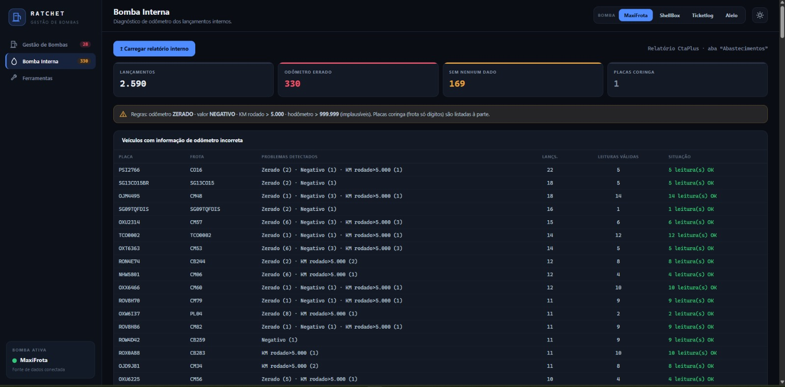

{{ a.num }}
{{ a.tag }}
{{ a.titulo }}
{{ a.texto }}
{{ a.iniciais }}
{{ a.responsavel }}
O CCOP concentra o acompanhamento da frota e dos equipamentos da empresa: telemetria, abastecimentos, planos diários, quilometragem produzida, manutenção e rateio de custos. O trabalho combina rotinas de análise recorrentes com o desenvolvimento de sistemas internos que padronizam e automatizam esse controle.
{{ p.texto }}
{{ a.texto }}
Duas soluções em uso que substituíram controles descentralizados por processos padronizados e auditáveis.
Manuais de operação e documentos descritivos do setor, em PDF.
Distribua as 24 horas do dia entre operação, marcha lenta e paradas. O sistema valida o total e sinaliza pendências antes do fechamento.



Base consolidada de MaxiFrota, Shell Box, Ticket Log, Alelo e bomba interna. Ao rodar a análise, o sistema calcula médias, desconsidera ARLA 32 e destaca as linhas fora do padrão com memória de cálculo.

